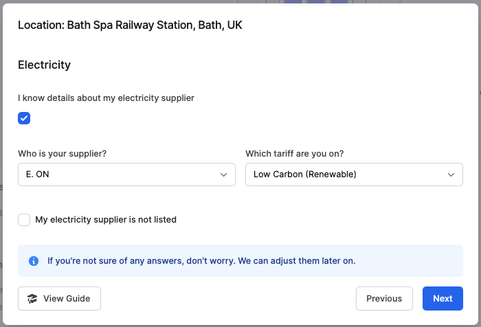

Getting Started
You have been selected as the data holder for Facilities in the office. As such, we need you to complete the wizard for in the Reporting Period.
If you're in your second year of analysis (or more), you can skip straight to Step 2: Tweak your data where you can adjust the autogenerated data for Reporting Period
You'll see the following task in your to-do list here: vso.alectro.io/todo-list
Finding and Requesting Data
We refer to the Facilities Management team in this page, but depending on the size of the building, this may just be your landlord, or one of the team members. Ultimately, its the person who controls the heat and electricity in the building!
You can use the email template below to contact your FM team, or see the FAQ section for more details on what to look for from utilities data.
Dear [data holder],
We're undertaking an analysis of our carbon impact and need some information about our office.
If you could provide me the following information for the period of [start date to end date], I'd be grateful:
Electricity
- Usage: The total use in kWh for each month
- Supplier: Which company supplies the electricity i.e. EDF or British Gas
- Tariff: If the tariff is a renewable/zero-carbon tariff or not
Heating
- Type: Whether this is provided by boilers, purchased heat, or via a VRV/VRF system
- Usage: The total use in kWh/litres for each month (if applicable)
Water
- Usage: The total use in m3/litres for each month
Refrigerants
- Type: Which refrigerant is used i.e. R404, R410a etc
- Top-ups/leaks: If the system was topped up, then how many kg of refrigerant was used
Electricity: You'll find your electricity use in kWh. These will be on you electricity bills or be provided by your FM team or landlord.
Heating: This will typically be from natural gas, in kWh. These will be on you heating bills or be provided by your FM team or landlord. This data might come from an alternative source, or be provided directly by electricity.
Water: You'll find your wate use in m3 or litres. These will be on you water bills or be provided by your FM team or landlord.
Refrigerant: Refrigerants are used in air-conditioning systems. You will only need to complete this if you've had a leak of the system during the period of analysis. This information wioll be contained in the building's F-gas books, which are required by law to be kept up to date, with any leaks recorded. This information will be provided by your FM team or landlord.
Completing the Data
Using the Template
You're given a range of options within the Onboarding Wizard. One of these is to "Download Template". Click this to download the template.

When you click to download the template, you will see a modal pop-up with Key Data and Location Data which you can then use to complete the Admin section of the template.

Add the relevant data into the Admin Section of the template (Step 1), and then complete the specific data (Step 2).
Once the data is completed, you can click "Upload Raw Data" to upload the data.
We'll do the rest from here, and we'll be in touch if we have any questions regarding the data.
Using the Onboarding Wizard
When you click to begin your task, you'll see the Facilities onboarding panel.
Step 1: Complete the Wizard
Click Start Wizard to enter the data
Select the location you're entering data for to Start. There may be separate data-holders per location, but please check with your admin if you're unsure.
Here you can answer some quick questions about the facility to give some basic data. You can adjust this data later on if required:
General Information
- Does the facility have air-conditioning? Tick the box if it exists in the office
- How would you describe your office space? Good indicates a modern office with active improvements to reduce energy use. Typical would indicate a less modern office with limited active improvements to reduce energy use
Electricity
- Do you know your electricity supplier? Tick the box if you have details on the supplier and tariff in the office. If you don't have these, we can use location-based (grid-average) emissions as a proxy until you get this information for future years.
- Suppier and tariff Select your supplier and whether the tariff is a low carbon one, if known.
- My electricity supplier is not listed If your supplier isn't listed, you can enter then here and we'll update the database for you.

Heating
- The main source of heating? Tell us whether this is Natural Gas, Purchased Heat (from District Heating), or Onsite purchased heat.
- Is all heating controlled by VRV/VRF? Tick the box if this is true for the facility (What is a VRV/VRF system?).
- Do you know your electricity supplier? Tick the box if you have details on the supplier and tariff in the office. If you don't have these, we can use location-based (grid-average) emissions as a proxy until you get this information for future years.
- Suppier and tariff Select your supplier and whether the tariff is a low carbon one, if known.
- My electricity supplier is not listed If your supplier isn't listed, you can enter then here and we'll update the database for you.
Heating
- The main source of heating? Tell us whether this is Natural Gas, Purchased Heat (from District Heating), or Onsite purchased heat.
- Is all heating controlled by VRV/VRF? Tick the box if this is true for the facility (What is a VRV/VRF system?).
When you're done, click to Submit the data.
If you need to complete the wizard for another location, you can select it here, or else head back to the wizard homepage by clicking Done.
Step 2: Tweak your data
Now you've completed the initial wizards you can tweak the data for each individual month.
Click on the red square for each location to bring up the edit modal.
From here you can adjust each month by changing the number in the functional units.
There are more details on what to expect from data below, but in general the data should be directly applicable to the functional units that have been created. Simply paste or type your real values into the data entry.
Once you've made your edits, check the box on the right hand side, and click to Confirm Data. This will adjust the data from AUTO-GENERATED to USER-GENERATED.
Step 3: Mark as Complete
The red check mark will now have turned green for each completed location.
Once all locations are completed, you can mark the whole section as complete by clicking Mark as Complete
The section will complete, and you can go back to your to-do list if you have other items to complete, else your work is done!
Your to-do list will now have a completed message in it.
What to expect from the data?
Electricity
Electricity is provided directly as a utility bill to the bill payer. This will come on a traditional utility bill (typically via a PDF). This bill will contain monthly usage data, the supplier, the tariff, and whether the tariff is low-carbon or not (typically referred to as renewable, green, or low-carbon).
Typically, this monthly usage will be collected by the Facilities Management team in your building so that you don't have to deal with these directly. If you don't get sent this directly, you can ask your Facilities Management team.
Larger offices will tend to break this down on a space basis (i.e. room or floor), and data will be available on request
Heating
Heating is provided on bills as kWh if delivered via a traditional combustion system, or by purchased heat. If the building uses an air management system, this is covered under electricity.
Typically, this monthly usage will be collected by the Facilities Management team in your building so that you don't have to deal with these directly. If you don't get sent this directly, you can ask your Facilities Management team.
Larger offices will tend to break this down on a space basis (i.e. room or floor), and data will be available on request
Refrigerants
Refrigerants are a very important component of facilities data as a relatively small leak of the refrigerant can result in a large impact as the chemicals used in the systems have potent greenhouse warming potential.
Data is usually available from the Facilities Management team as it is a legal requirement to keep a record of any f-gas leaks or top-ups, and these are reported in F-gas ledgers.
You can often find refrigerant information in F-gas reports on the building EPC page here
Water
Water data is usually available from the Facilities Management team on a quartely basis. Often this is delivered via a whole building so will need to be apportioned on a space share basis.
Frequently Asked Questions
What if I don't know the data?
If the data isn't available we can use benchmark data to fill in the gaps. We would expect this data to be available for most organisations.
What if we work in a co-working Space like a WeWork or similar?
In this instance, we can speak directly to the building or facilities management through the office manager. Please put us in touch with office management.
What if my data isn't from the 1st of the month to the end of the month?
Billing cycles vary, but we ask you to use the data that best corresponds to the month in question. This is typically based on which month the majority of the billing cycle falls into. If the billing cycle happens to be exactly half-way through the month, please use the lower half of the bill to decide the date.
What happens if my data is only available on a quarterly/bi-annual/annual basis?
In this instance, we would ask you to split it by the number of months the data is for:
- Quarterly: split the data by 3 and add equally into each month
- Bi-annual: split the data by 6 and add equally into each month
- Annual: split the data by 12 and add equally into each month